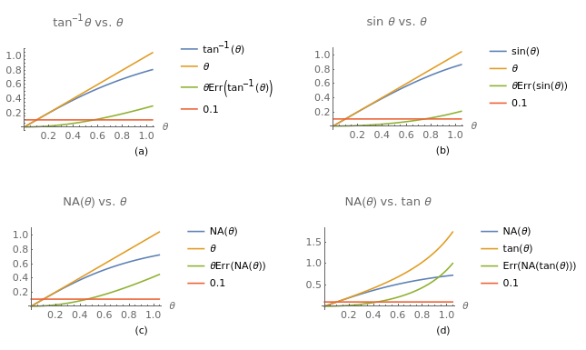

testpost
So this works?Write your post here.
(defun hello ()
"This is a test"
(print "hello"))
(hello)
okay
print("hello")
So this works?Write your post here.
(defun hello ()
"This is a test"
(print "hello"))
(hello)
okay
print("hello")
MORE BEAUTIFUL VERSION
A short inquiry into NA approximations and their validity.
The definition for NA is given by the formula \[\mathrm{NA} = \sin{\theta}\] where \(\theta\) is half the opening angle of the light cone accepted by the imaging system.
For small angles the paraxial approximation \(\sin{\theta} = \theta\) can be used, for calculating \(\theta\) and for calculating \(\sin{\theta}\).
For a thin lens \(\theta = \tan{\frac{D}{2f}}\), where \(D\) and \(f\) are respectively the diameter and the focal length of the lens.

Table 1 shows the angles below which the relative error for the paraxial approximation is less then 10%.
| rad | deg | |
|---|---|---|
| arctan(θ) vs θ | 0.569 | 32.60 |
| sin(θ) vs θ | 0.748 | 42.86 |
| NA(θ) vs θ | 0.458 | 26.24 |
This week support for the Robot Framework Intellisense language server was added to Emacs's lsp-mode.
For easy installation a spacemacs layer that also uses the robot-mode package by Doug MacEachern can be found here.